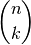
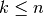
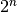

Prime digit replacements¶
Problem 51
By replacing the 1st digit of the 2-digit number *3, it turns out that
six of the nine possible values: 13, 23, 43, 53, 73, and 83, are all
prime.
By replacing the 3rd and 4th digits of 56**3 with the same digit, this
5-digit number is the first example having seven primes among the ten
generated numbers, yielding the family: 56003, 56113, 56333, 56443,
56663, 56773, and 56993. Consequently 56003, being the first member of
this family, is the smallest prime with this property.
Find the smallest prime which, by replacing part of the number (not necessarily adjacent digits) with the same digit, is part of an eight prime value family.
Solution
Some handy functions: euler07.makePrimes() and euler07.primeGen().
from euler07 import primeGen, makePrimes
import collections
import itertools
We enumerate large numbers of patterns of numbers and see how many are primes.
Or.
We apply a starting-point filter to the above approach.
We’re looking at doing substitutions within n-digit primes. This inolves  replacement positions for . For each position, we try all 9 digits in the various positions to see how many primes end up with.
We apply this search with each prime as a starting point and see how many results are in the set of primes.
Or.
We’re looking at primes with some matching digits. Again, we could enumerate all “open” positions positions for . All other positions will have to match. But, we don’t really have all combinations available.
We partition the primes into 3-, 4-, 5- and 6- digit batches. (Primes, p, leq 1,000,000) And search each batch for patterns where a prime has 2 or more repeating digits.
Sort of like filtering for poker hands with pairs or better.
Each prime with 2 or more repeating digits belongs to a template. So 56003 has repeating 0; the template is 56**3. 56113 has repeating 1; the template is 56**3.
We’re transforming prime -> template to see how many primes fit each template.
Note that a given number has multiple templates. 56333 -> 6333, 5*333, 56*33, 563*3, 5633, 56**3, 563**, 56*3*, 56***. Essentially all  combinations of same digit positions get replaced by ‘*’.
Even more interesting would be a 122334 where there are two repeated sections. This leads to even more potential patterns for this number.
Nearly a duplicate of euler04.digits(). Uses tuple instead
of a list.
def digits( n ):
"""Expand a number, n, into a tuple of digits.
>>> from euler51 import digits
>>> digits(56003)
(5, 6, 0, 0, 3)
"""
d = []
while n != 0:
d.insert( 0, n % 10 )
n = n // 10
return tuple(d)
Determine the duplicated digits within a number.
def all_dups( d ):
"""Decompose a number's digits, d, into a summary of duplicated digits.
>>> from euler51 import all_dups
>>> all_dups( (5, 6, 0, 0, 3) )
{(0, 2)}
"""
return set((n,c) for n,c in ( (n, d.count(n)) for n in d ) if c > 1)
Yet another version of euler10.makePrimes().
This version includes a start and stop value.
def primesTo( start=2, stop=10 ):
"""Generate a sequence of primes to a limit.
>>> list(primesTo(stop=10))
[2, 3, 5, 7]
"""
for p in primeGen():
if p < start: continue
if p >= stop: break
yield p
Use all_dups() and primesTo() to get a list
of primes with duplicated digits.
def prime_dup_list(primes):
"""
>>> from euler51 import prime_dup_list, primesTo
>>> prime_dup_list(primesTo(stop=102))
[('11', {('1', 2)}), ('101', {('1', 2)})]
>>> p, dup_set = prime_dup_list( [56333] )[0]
>>> p
'56333'
>>> dup_set
{('3', 3)}
"""
return list(
(p_d, dups) for p_d, dups in (
(p_d, all_dups(p_d))
for p_d in (str(p) for p in primes))
if dups
)
An exploration of the problem space.
candidates= prime_dup_list( primesTo(stop=100000000) )
distr= collections.defaultdict(list)
for p, pat in candidates:
distr[max(c for n,c in pat)].append(p)
for length in distr:
print( length, len(distr[length]) )
del distr
Where is a character duplicated?
def indices( string, char ):
"""Return indices where char occurs in the given string.
>>> from euler51 import indices
>>> indices( "56333", "3" )
(2, 3, 4)
"""
return tuple( i for i in range(len(string)) if string[i] == char )
Replace a duplicated character with “*” to change a number to a pattern.
def rewrite( string, positions ):
"""Rewrite a string to replace given positions with "*".
>>> from euler51 import rewrite
>>> rewrite( "56333", (2, 3, 4) )
'56***'
>>> [rewrite('56333',combo) for combo in itertools.combinations((2,3,4),2)]
['56**3', '56*3*', '563**']
"""
return "".join( '*' if c in positions else string[c] for c in range(len(string)) )
For a set of candidate numbers (primes with duplicated digits) replace the duplicated digits with “*” to reduce them to patterns. Then expand each combination of digit positions to locate alternative patterns, creating a pattern space with patterns and numbers that fit the pattern.
def pattern_space( candidates ):
"""
>>> from euler51 import prime_dup_list, pattern_space
>>> candidates= prime_dup_list([56003, 56993, 56773, 56333, 56113, 56443, 56663])
>>> pat_space= pattern_space(candidates)
>>> sorted(pat_space['56**3'])
['56003', '56113', '56333', '56443', '56663', '56773', '56993']
"""
pat_space= collections.defaultdict(set)
for p, dup_set in candidates:
# e.g. p='56333', dup_set= set([('3', 3)]))
for digit, count in dup_set:
pat_space[p.replace(digit, '*')].add(p)
# Need all 2*n variants of partial replacement.
positions = indices(p, digit)
# e.g., positions=(2, 3)
for i in range(1,len(positions)+1):
for combo in itertools.combinations(positions,i):
pat_space[rewrite(p,combo)].add(p)
return pat_space
Filter a pattern space for patterns of length 8 or longer.
def pattern_space_8( pat_space ):
"""Filter to extract patterns of length 8 from a pattern space.
This will visit each key; if the set of patterns is large enough,
then each set is yielded.
>>> from euler51 import pattern_space_8
>>> from euler51 import prime_dup_list, primesTo, pattern_space
>>> candidates= prime_dup_list(primesTo(start=10000,stop=10000000))
>>> pat_space= pattern_space(candidates)
>>> p8= sorted(list(pattern_space_8(pat_space)), key=lambda a:min(a))
>>> for p in p8:
... print(sorted(p))
['121313', '222323', '323333', '424343', '525353', '626363', '828383', '929393']
['2090021', '2191121', '2292221', '2494421', '2595521', '2696621', '2898821', '2999921']
['4004509', '4114519', '4224529', '4444549', '4554559', '4774579', '4884589', '4994599']
['5074009', '5174119', '5374339', '5474449', '5574559', '5774779', '5874889', '5974999']
['5181019', '5282029', '5383039', '5484049', '5585059', '5787079', '5888089', '5989099']
"""
for p_set in pat_space.values():
if len(p_set) >= 8:
yield p_set
Test the module components.
def test():
"""
>>> import itertools
>>> list(itertools.combinations((2,3,4),1))
[(2,), (3,), (4,)]
>>> list(itertools.combinations((2,3,4),2))
[(2, 3), (2, 4), (3, 4)]
>>> list(itertools.combinations((2,3,4),3))
[(2, 3, 4)]
"""
import doctest
doctest.testmod(verbose=0)
Compute the answer.
def answer():
candidates= prime_dup_list(primesTo(start=10000,stop=10000000))
pat_space= pattern_space(candidates)
pat_8 = pattern_space_8(pat_space)
return min( min(p) for p in pat_8 )
Confirm the answer.
def confirm(ans):
assert ans == '121313', "{0!r} Incorrect".format(ans)
Create some output.
if __name__ == "__main__":
test()
ans= answer()
confirm(ans)
print( "The smallest prime which, by replacing part of the number (not"
" necessarily adjacent digits) with the same digit, is part of an eight"
" prime value family:", ans )